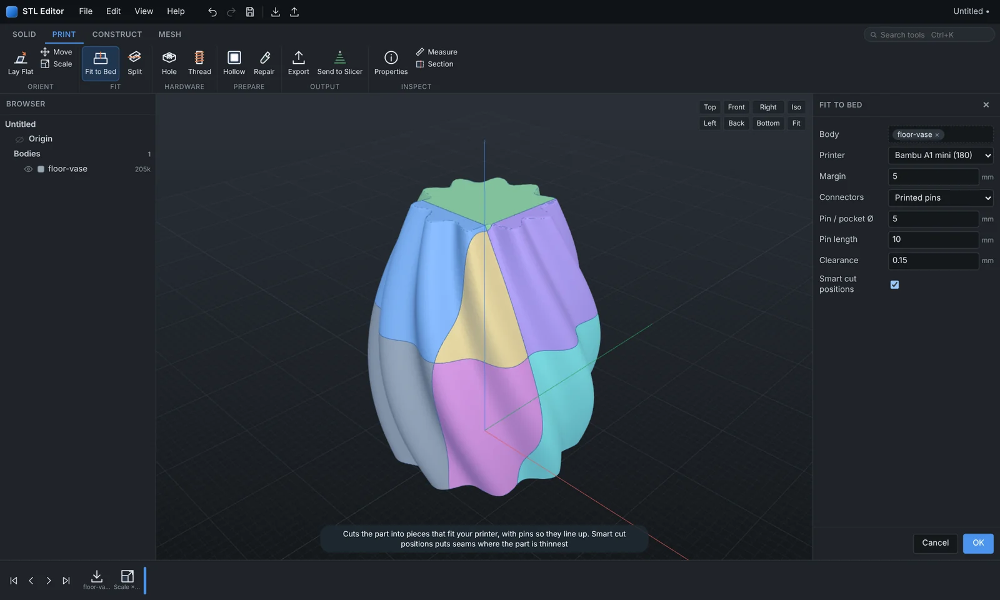
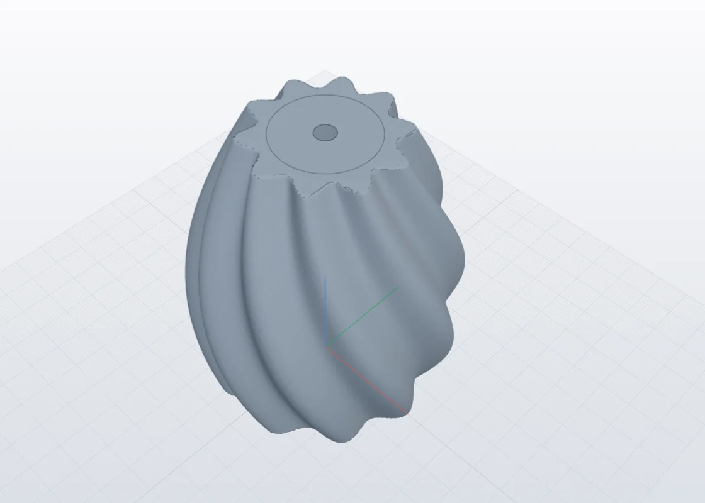
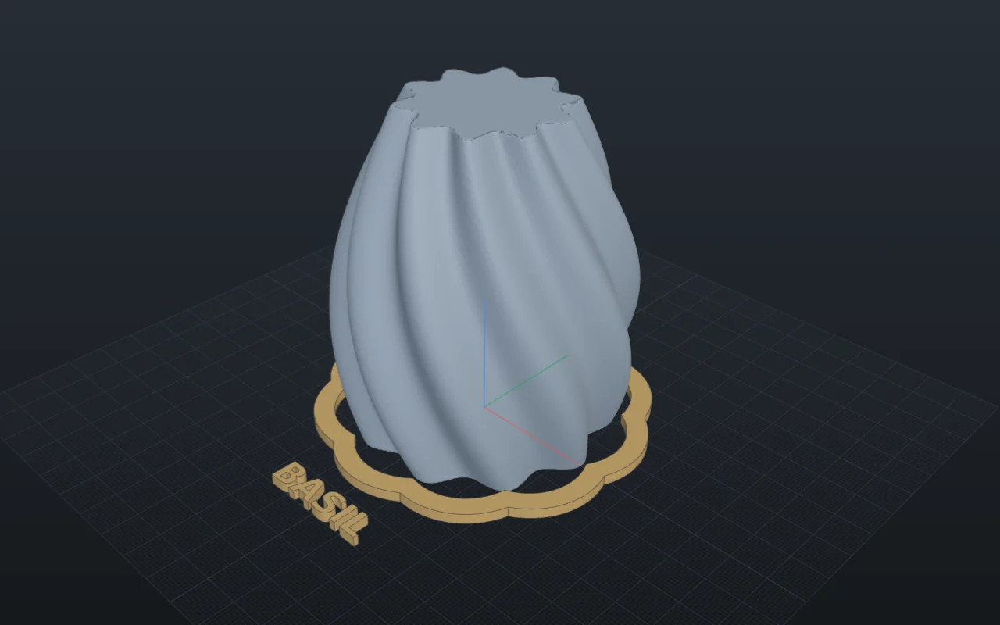
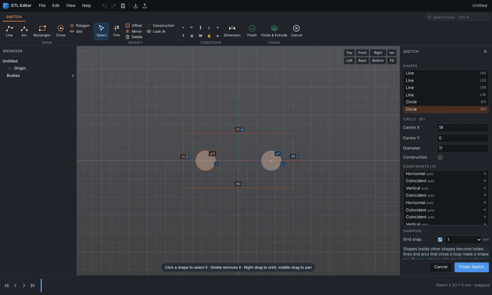
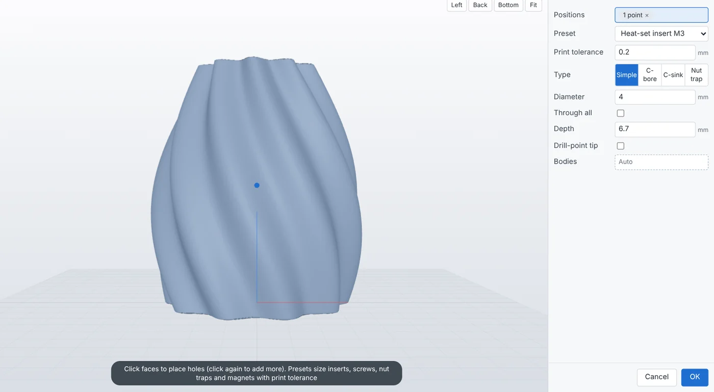
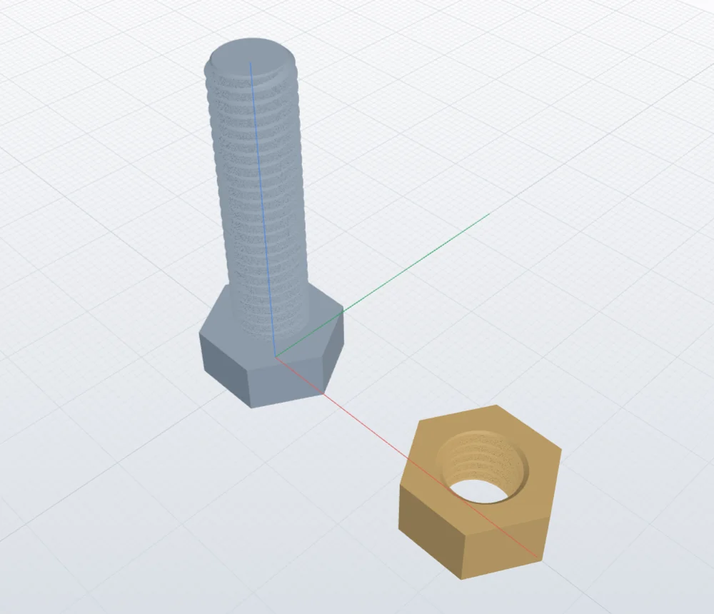
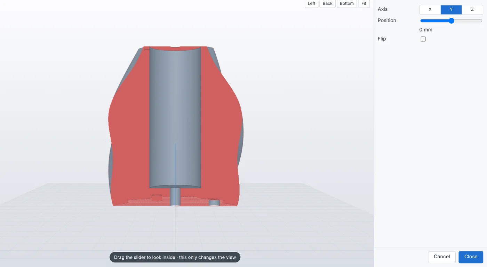
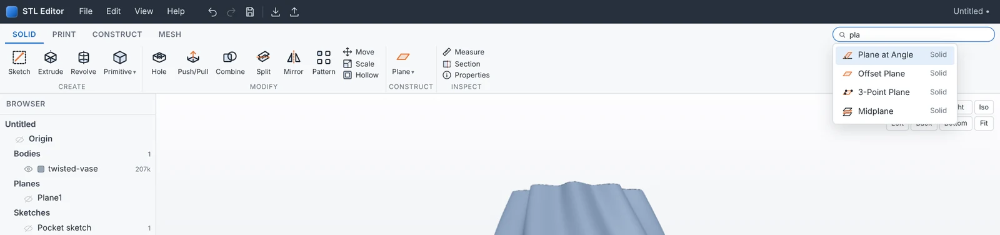

Sketch on any face, extrude, cut, drill holes for real hardware, add threads that print and split big parts to fit your bed, right on the mesh you downloaded.

Almost everything you download for 3D printing is an STL. The tools to change one properly are split across two kinds of program, and neither does the whole job.
Fusion, SolidWorks and Onshape treat an STL as dead triangles. You can look at it, but sketching on it and cutting it is a fight.
Sculpting and patching apps are great at blobs, but you can't type "a 4 mm pocket, 20 × 12, centred" or put an M3 insert exactly where you want it.
It cleans up the mesh into a watertight solid, then gives you sketches, exact dimensions, booleans and print-focused tools in an editable timeline.
Every step is recorded in a timeline, so you can go back and change an earlier step and everything after it updates.

This vase came in as a 200,000-triangle STL. A sketched circle on a plane above it cut the planter pocket, then a drain hole and three magnet pockets went into the base. That's four steps, and each one can still be changed.

Tools for the most common job: changing a model somebody else made. This ring follows the twisted vase exactly, with 0.4 mm of clearance, because its outline was projected into the sketch and offset.

Draw with lines, arcs, rectangles, circles, polygons and slots, and type exact sizes while you draw. Lines join up and stay level or plumb on their own. Change a dimension and the shape follows. Drag a point and the constraints hold.
1 3/8
Click the face where you want holes, as many points as you like, then pick a preset. Sizes include a print tolerance, so parts fit straight off the printer.

Make tapped holes in a face, or bolts and studs standing on it, with a true ISO 60° profile. An M8 bolt and nut made with the default 0.2 mm clearance screw together with no interference.

Pick your printer and oversized parts are cut into pieces that fit, with connectors at every seam. Smart cut positions put the seams where the part is thinnest.

Tools are grouped into Solid, Print, Construct and Mesh tabs. Press Ctrl+K and type to run any tool by name. In a narrow window the toolbar shrinks to icons instead of scrolling.
Changed your mind? Double-click any step on the timeline. Save as .stlx to keep the whole history.
One zip file. Nothing to install, and it can run from a USB stick. Or open the web edition and start right away.
When a new version comes out, the app shows a small notice with a Download button. It only checks this project's public releases page and sends nothing about you or your files.
.stlx projectsgit clone https://github.com/natterman12/STL-Editor.git cd STL-Editor pip install -r requirements.txt python main.py
The same editor running in your browser: open a model, sketch on a face, extrude, cut, drill holes, add threads, split for your bed and export. Your files stay on your computer; the geometry engine runs inside the page.
.stlx files open in both editionsVery large meshes (a million triangles and up) are faster in the desktop app.
Yes. STL Editor is open source under the GNU GPL v3. You can use it for anything, including commercial prints, and you can read and change the code. If you share a modified version, it has to stay open source too.
No. Everything runs on your computer. The desktop app's engine only listens on your own machine (127.0.0.1); the only thing it fetches online is the "latest release" page of this project, to tell you about updates, and you can turn that off. The web edition loads the page and then works entirely inside your browser: models are opened and saved locally and are never sent to a server.
They share the same interface and project files. The web edition has nearly every tool; Hollow, Remesh, Sculpt, the Rebuild repair, Send to Slicer and To STEP need the desktop app. The desktop app is also faster on very large meshes and keeps autosave recovery copies.
Not on meshes yet. An STL is just triangles with no real edges to round. For blocky mechanical parts, To STEP can turn the mesh into a STEP file through SolidCraft so you can finish it in regular CAD.
Some downloads aren't watertight: they have holes, flipped faces or overlapping shells. They display and export fine, but click Repair (Mesh tab) before editing. Quick fix handles most files, and Rebuild turns even badly broken meshes into one clean solid.
Parts with around a million triangles work; a 942k-triangle figure was cut into bed-sized pieces in testing. Booleans use the Manifold library, which is fast and always gives watertight results.
The web edition runs on any computer with a recent browser. The downloads are for Windows. The code is cross-platform Python and a web UI, so python main.py --browser should run on macOS and Linux, but it hasn't been tested there yet. Reports are welcome.
Open an issue on GitHub, ideally with the STL and the steps that went wrong. Pull requests are welcome too.